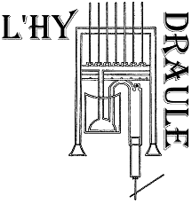
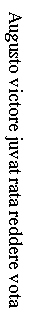

Poème dePorphyre Optatien(IVe siècle) |
 |
Post martios labores Et Caesarum parentes Virtutibus per orbem Tot laureas virentes Et principis tropaea Felicibus triumphis Exultat omnis aetas Urbesque flore grato Et frondibus decoris Totis virent plateis Hinc ordo veste clara Cum purpuris honorum Fausto precantur ore Feruntque dona laeti Jam Roma culmen orbis Dat munera et coronas Auro ferens corusto Victorias triumphis Votaque jam theatris Redduntur et coreis Me sors iniqua laetis Solemnibus remotum Vix haec sonare sivit Tota vota fonte Plæbi Versuque compta solo Augusta rite saeclis |
 |
O si diviso metiri limite Clio Una lege sui uno manentia fonte Aonio versus beroi jure manente Ausuro donet metri felicia texta Augeri longo patiens exordia fine Exiguo cursu parvo crescentia motu Ultima postremo donec fastigia tota Ascensus jugi cumulato limite cludat Uno bis spacio versus elementa prioris Dinumerans cogens aequari lege retenta Parva nimis longis et visu dissona multum Tempore subparili metri rationibus isdem Dimidium numero musis tamen aequi parantem Haecerit in varios species aptissima cantus Perque modos gradibus surget fecunda sonoris Aere cavo et tereti calamis crescentibus aucta Quis bene suppositis quadratis ordine plectris Artificis manus in numeros clauditque aperitque Spiramenta probans placitis bene consona rythmis Sub quibus unda latens properantibus incita ventis Quos vicibus crebis juvenum labor haud sibi discors Hinc atque hinc animaeque agitant augetque reluctans Compositum ad numeros propriumque ad carmina praestat Quodque queat minimum admotum intreme facta frequenter Plectra adaperta sequi aut placido nene claudere cantus Jamque metro et rythmis præstringere quidquid ubique est |
In « Nouveau manuel complet du facteur d'orgues », Hamel, Paris, 1849, page XXX.
Le seul écrit qui puisse nous donner quelques idées de la forme de l'orgue hydraulique, est une pièce de vers figurés de Porphyre Optatien, qui vivait au IVe siècle. (...) Le poète a voulu représenter par la forme de cette pièce l'instrument qu'il décrit. Vingt-six vers ïambiques tiennent lieu des touches. Le vers
Augusto victore juvat rata reddere vota
placé horizontalement, désigne le sommier sur lequel sont posés les tuyaux figurés par vingt-six hexamètres, dont le premier a vingt-cinq lettres, et dont chacun des autres s'accroît d'une lettre jusqu'au dernier qui en a cinquante.
C'est au quatorzième vers hexamètre que commence la description de l'orgue, dont voici la traduction (...) :
« Ces vers sont la figure de l'instrument, sur lequel on peut faire entendre des chants variés et dont les sons puissants s'échappent de tuyau d'airain creux, arrondis, et dont la longueur s'accroît régulièrement. Au-dessous des tuyaux sont placés des touches, au moyen desquelles la main de l'artiste ouvrant ou fermant à son gré les conduits du vent, enfante une mélodie agréable et bien rythmée. L'eau placée au dessous de ces tuyaux et agitée par la pression de l'air que produisent le travail et les efforts de plusieurs jeunes gens, donne les sons nécessaire et assortis à la musique. Au moindre mouvement, les touches ouvrant les soupapes peuvent exprimer aussitôt des chants rapides et animés, ou une mélodie calme et simple ; ou bien encore, par la puissance du rythme et de la mélodie, répandre au loin la terreur. »